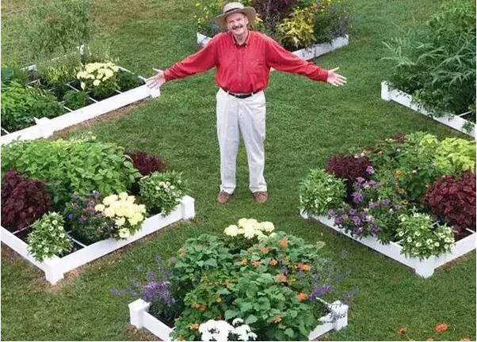
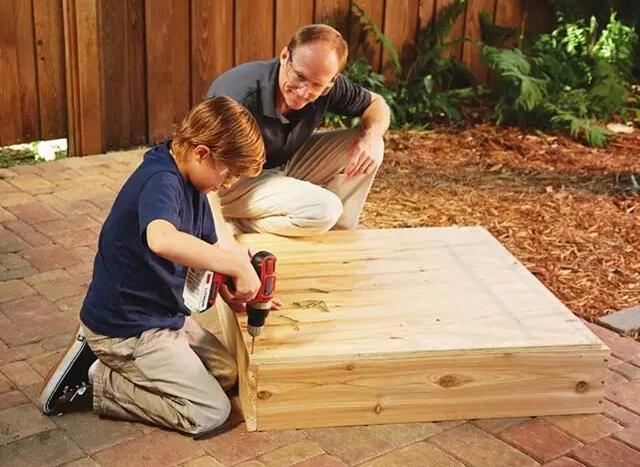
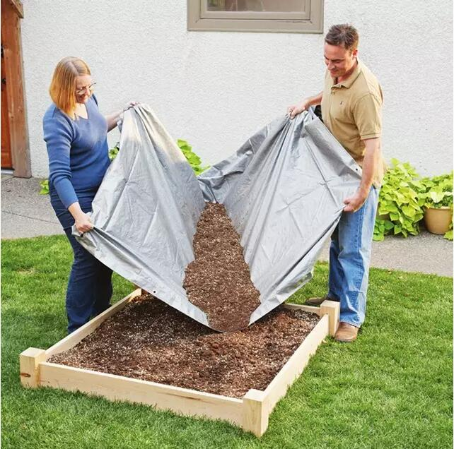
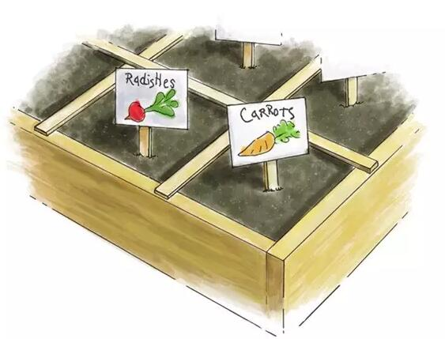
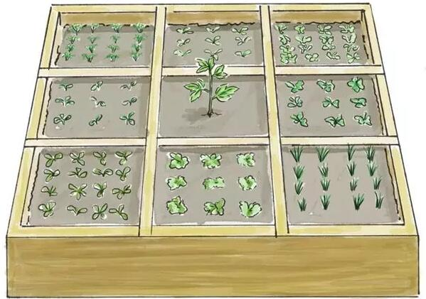
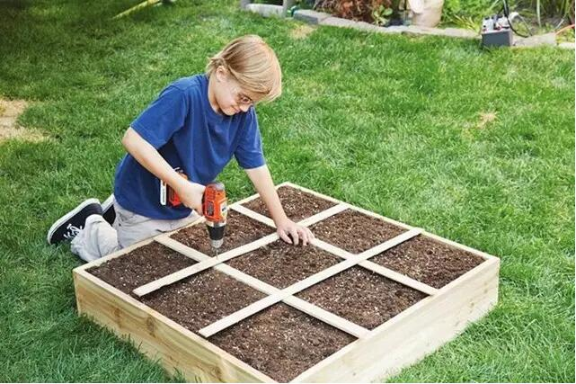
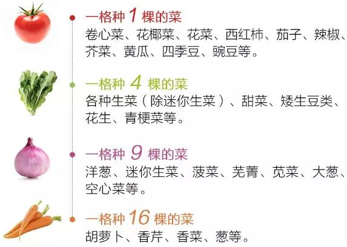
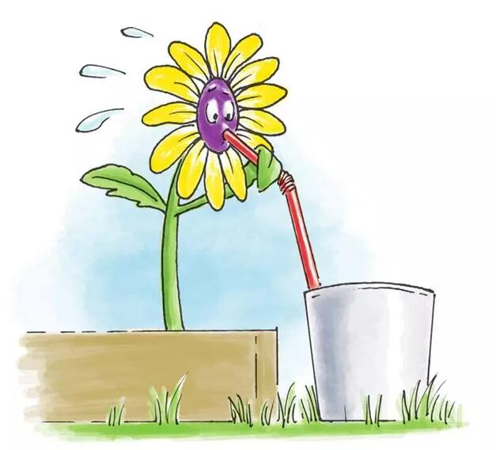
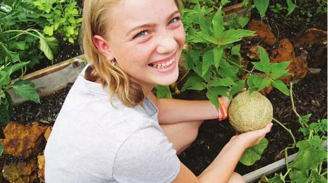

.jpeg)
.jpeg)
.jpeg)
.jpeg)
.jpeg)
.jpeg)
庆国集团
中国梦中国芯智慧生态农业饮食健康溯源
提供绿色产品引领健康生活服务百姓餐桌
1米阳台菜园！够全家吃的菜~谁家都能实现！
在这个土地都比金子珍贵的时代，能拥有一方自家的菜园，想想都是一件奢侈的事。 但是~ 美国的梅尔·巴塞洛缪，却走了一条不同寻常的路，亲自动手在自家创造了日后风靡世界的“一米菜园”（Square Foot Gardening）的园艺风潮 这位最能折腾的梅尔大爷，肯定对中国农耕文明非常痴迷和神往，自学插秧、育苗、手工种菜……画风堪比美国版的“青山老农”，洋气十足的国际潮范！ 那么，怎么才能制作属于你的一米菜园呢？
1. 一米种植箱
种植箱的深度约15厘米，长和宽各为1-1.2米。这样无需脚踩进去，在外面也能浇水，摘菜。和传统的菜园相比，一米菜园产量更大。它的产量是传统菜园的5倍还要多。
2. 梅尔混合土
 梅尔自制了“梅尔混合土”，让土壤更适合蔬菜生长。梅尔混合土由等量的混合堆肥、泥煤苔、沙石组成，能用上差不多10年的时间。
3. 你想在一米菜园里种什么？
在做好的箱子上放上隔板，每个格子大约30厘米的距离，这样看上去更整洁舒服。每个格子可种上一种蔬菜。
 想在一米菜园里种什么，将是一个非常有趣的过程。
梅尔大爷还推荐了26种蔬菜：
4. 接下来就是育苗了
 一米菜园的蔬菜无需除草，只要浇水就可以了，非常方便，浇水最好用喷洒的方式、
5. 享受收获的喜悦
 最开心的事，莫过于自己亲手种植的蔬菜，到了收获的那一刻。但要注意，在摘取的时候，要小心不要伤害到植物的根系。
“一米菜园”，从美国走向世界
“一米菜园”从诞生到今天，已有将近40年的历史。多年前，身为土木工程师的梅尔大爷还是年轻人的时候，周末喜欢玩园艺。他发现传统的单行种植难以管理，且浪费时间和投入。经多次实验，他发明了1米X1米的种植空间，并改良了土壤，成功开发了一套园艺方法——“一米菜园”（Square Foot Gardening）。一米菜园的优势在于：只用原先20%的种植空间，就能获得100%的收获。一开始，《一米菜园园艺秀》连续多年在电视节目上播出，是迄今为止美国收视率最高的园艺节目，梅尔爷爷收到了美国各地成千上万的园丁表示感谢的来信。梅尔还通过一米菜园全球培训中心，将一米菜园介绍给了世界各地的人道主义机构和领袖人物，推广到了发展中国家，让数百万营养不良的贫困百姓从中受益。这个全球推广计划从非洲延伸到了亚洲、南美，被非营利性人类公共利益团体公认为是一个“巨大的成功”。目前，梅尔大爷的一米菜园已被全世界超过100万的园丁所采用。
种菜，要从娃娃抓起！
一米菜园并不止于园艺空间的利用、健康蔬菜的种植，更是寓教于乐的理想方式。从2010年起，梅尔·巴塞洛缪在传授一米菜园的同时，开始计划为孩子们编写一本园艺的书。因为孩子们喜欢和土地玩耍，喜欢看他们栽培的植物长大，变成可以食用的蔬菜，他们满怀的热情让一米菜园有了更丰富的生命力。通过一米菜园，爸爸妈妈、老师们可以和孩子一起在亲近自然、利于生长和学习的健康环境中，体验种植的乐趣和生活的美好。一米菜园，不仅大人们能从中获益，孩子们更可以从中学习到：科学、生态学、植物学、数学，甚至艺术、设计、语言、逻辑，还有园艺知识、健康饮食习惯，乃至节约用水、爱护环境、自给自足的精神等等……
从种植到收获，对大人和孩子而言，都是一个幸福感爆棚的过程！不管你心不心动，反正为了子孙后代，我已经是被彻底打动了！让你的家人和孩子们一起来体验，做一个开心“农夫”，种一家人的放心蔬菜吧~